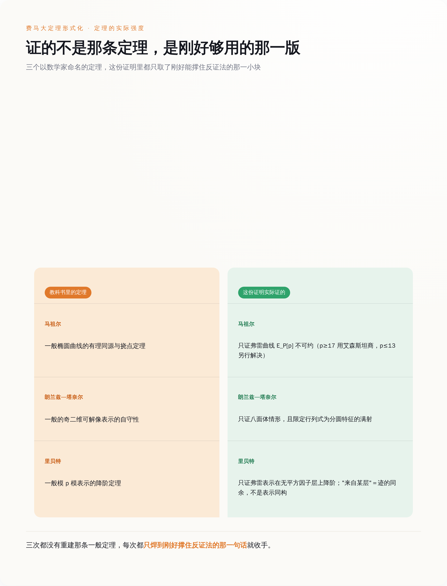

仓库根目录的 `PROOF-PATH.md` 第一句就写明了路线：「The argument is that of Frey, Serre, Ribet, Wiles and Taylor-Wiles, largely as in Darmon, Diamond and Taylor, run as a proof by contradiction.」弗雷、塞尔、里贝特、怀尔斯、泰勒—怀尔斯，走的是达蒙、戴蒙德和泰勒那本讲义的讲法，用反证法组织。1994 年最终补完的那个证明，一步没变。
被找回来的名字里，排在最前面的是 Kevin Buzzard，后面跟着 Andrew Yang、Matthew Jasper、Salvatore Mercuri、Ruben Van de Velde、Pietro Monticone；flt-regular 那边是 Alex J. Best、Christopher Birkbeck、Riccardo Brasca、Eric Rodriguez Boidi 等人。
Buzzard 这个名字值得单独说一句。帝国理工那个 FLT 项目的仓库 README 是这么写的：项目目前由 Kevin Buzzard 领导，到 2029 年 9 月为止由 EPSRC 的 EP/Y022904/1 号资助支持，路线基本上是 Richard Taylor 在和 Buzzard 的讨论中规划出来的。一群人、一笔排到 2029 年的经费、1700 多次提交，做的正是同一件事。
这是工程师的写法，不是数学家的写法。数学家证一般情形，因为定理要拿去教学生、拿去给别人用；这份证明只需要撑住最下面那一句话，所以每一根柱子都只做到刚好承重。`PROOF-PATH.md` 开头那句话说得更直接：Where this prose and the Lean differ, the Lean is right.——这些说明文字和 Lean 代码不一致的时候，以 Lean 为准。文字只是导游，代码才是地形。

图注：三个以人名命名的步骤，证的都是「够撑住结论」的特化版本，而不是教科书里那条通用定理。
六、这件事真正的规格
把这几件事叠在一起看，这份交付物的规格是清楚的：结论可核验、过程不可读、来源需重建、定理按需裁剪。
这四条不是费马大定理独有的。任何一个用 AI 大规模生产出来的东西——一个上万行的补丁、一份合规报告、一套数据管线——出厂时都是这个样子：对不对可以查，怎么来的没人讲，谁的功劳要考据，覆盖范围刚好卡在你提的那句需求上，多一寸都没有。
区别只在于，数学有 Lean。它有一个不看名字、不看注释、不看你说了什么，只按公理逐条核对的内核，所以「没人读过」这件事才勉强可以接受。你手上那份 AI 产出没有内核。你只有一个感觉良好的 review，和一句「看着挺对的」。
所以下次收到 AI 交付的东西，那个该问的问题不是它写得对不对，而是：这玩意儿有没有一个不依赖我阅读的验证器？ 有，那就照 Lean 的标准去信它——先确认验证器检查的那句话，正好是你要的那句话。没有，那你手上就是一份 60,475 个模块，谁也没读过。